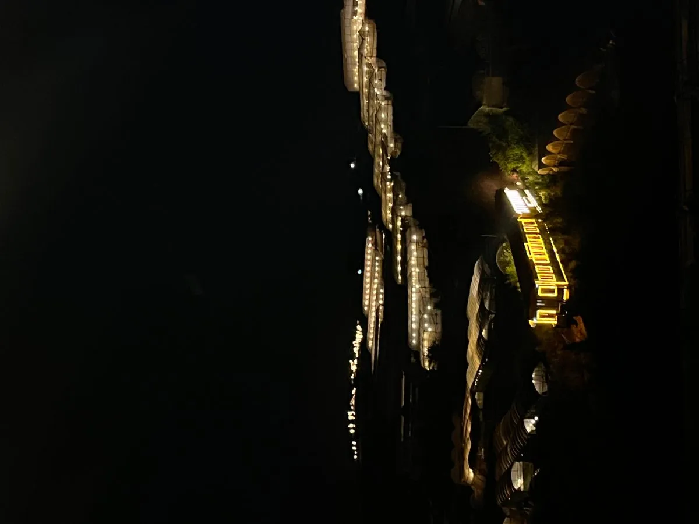

Tổng quan khí hậu Đà Lạt
Đà Lạt nằm ở độ cao 1.500m so với mực nước biển, nhiệt độ trung bình 18-25°C quanh năm. Có 2 mùa rõ rệt: mùa khô (tháng 11 - tháng 4) và mùa mưa (tháng 5 - tháng 10).
Mùa khô (Tháng 11 - Tháng 4) — Thời điểm vàng
Đây là mùa đẹp nhất! Trời nắng ráo, ít mưa, hoa nở rộ khắp nơi. Nhiệt độ ban đêm xuống 10-15°C — lý tưởng để ngồi ngoài trời ăn nướng, ngắm sao.
Tháng 12-1: Mùa hoa mai anh đào nở hồng rực cả thành phố.
Tháng 2-3: Hoa cẩm tú cầu, mimosa vàng nở rộ.

Mùa mưa (Tháng 5 - Tháng 10) — Đà Lạt sương mù
Mưa thường rơi vào buổi chiều, sáng vẫn nắng đẹp. Đà Lạt mùa mưa có vẻ đẹp riêng: sương mù bao phủ đồi thông, không khí lãng mạn. Giá phòng rẻ hơn 30-50% so với mùa khô.
Mùa cỏ hồng (Tháng 11-12)
Đồi cỏ hồng (cỏ đuôi chồn) nở rộ tạo cánh đồng mơ màng — background check-in "triệu like". Thời điểm này cũng là đầu mùa khô, thời tiết lý tưởng.
Lễ hội & sự kiện theo mùa
Festival Hoa Đà Lạt: 2 năm/lần vào tháng 12.
Lễ hội cà phê: Tháng 3 hàng năm.
Giáng sinh & Tết: Đà Lạt đông nhất năm nhưng cực kỳ lung linh.
Đà Lạt mùa nào ăn nướng ngon nhất?
Thật ra, Đà Lạt mùa nào cũng thích hợp ăn nướng BBQ vì thời tiết mát mẻ! Nhưng mùa khô ngồi ngoài trời ngắm hoàng hôn tại Trạm Dừng Chill là trải nghiệm tuyệt vời nhất.

Kết luận
Đà Lạt mùa nào đẹp nhất? Mùa khô (tháng 11-4) là lý tưởng, nhưng Đà Lạt đẹp quanh năm theo cách riêng. Dù đi mùa nào, đừng quên ghé Trạm Dừng Chill để thưởng thức nướng BBQ view đẹp nhất phố núi!